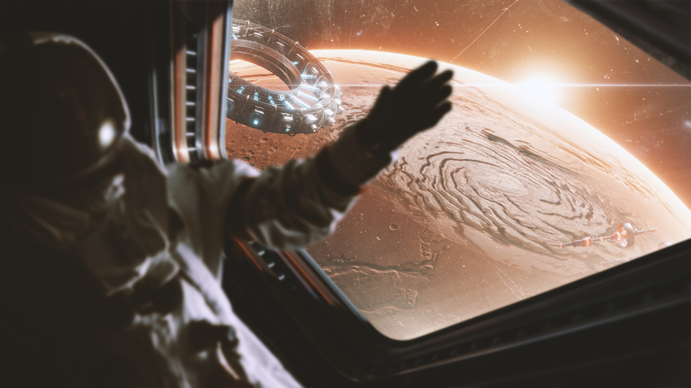

<style>

    .hashtags {
        text-align: center;
        max-width: 800px;
        margin: 20px auto;
        padding: 10px;
    }

    .hashtags a {
        display: inline-block;
        margin: 5px;
        padding: 8px 12px;
        font-size: 0.9rem;
        font-weight: bold;
        text-decoration: none;
        color: #fff;
        background-color: #264653; /* Blue button-style hashtags  007bff*/
        border-radius: 20px;
        transition: background 0.3s ease;
    }

    .hashtags a:hover {
        background-color: #001f3f; /* Darker blue on hover */
    }

    body {
        font-family: Arial, sans-serif;
        margin: 0;
        padding: 0;
        background-color: #f5f5f5; /* f8f9fa */
        color: #333;
    }

    h2 {
        font-family: "Arial", sans-serif;
        font-size: 2.5rem;
        font-weight: bold;
        color: #001f3f; /* Dark blue for the title */
        margin-top: 20px;
    }

    p {
        font-family: "Arial", sans-serif;
        font-size: 1rem;
        line-height: 1.8;
        text-align: justify; /* Justified text for consistency */
        margin: 20px auto;
        max-width: 800px; /* Restrict content width */
    }

    .container {
        display: flex;
        flex-direction: column;
        align-items: center;
        padding: 20px;
    }

    img {
        margin: 20px auto;
        border-radius: 8px;
        width: 100%;
        max-width: 800px; /* Ensure images align with text width */
        height: auto;
        box-shadow: 0 4px 8px rgba(0, 0, 0, 0.2); /* Subtle shadow for modern look */
    }

    .text-muted {
        font-weight: bold; /* Bold subtitle */
        color: #264653; /* Subtle gray for subtitle */
    }
</style>

<section id="project-details">
    <div class="container">
        <!-- Page Header -->
        <div class="row">
            <div class="col-lg-12 text-center">
                <h2>Can AI Predict Astronaut Health Risks?</h2>
            </div>
        </div>

        <!-- First Image and Description -->
        <div class="row">
            <div class="col-lg-12 text-center">
                 
            <strong>
                Human Resilience in Long-Duration Spaceflight
            </strong>
            <p>
                Space exploration isn’t just about rockets and robotics—it’s about the resilience of the human mind and body. As we prepare for extended missions to the Moon and Mars, understanding how astronauts handle isolation, confinement, and stress is critical for mission success. A recent study by Travis Nelson (PhD Candidate, University of North Dakota), conducted in the NASA-funded Inflatable Lunar/Martian Analog Habitat (ILMAH), sheds light on how analogue astronauts experience and manage psychological and physiological stress during 14-day isolation missions. The findings offer valuable insights into how space crews can maintain cognitive and emotional well-being in extreme environments.            
            </p>   
            <p>
              Nelson’s research revealed that stress levels peaked in the first and final quarters of the mission, with fatigue and mood fluctuations affecting performance. Astronauts who relied on problem-solving and structured routines coped more effectively than those who leaned on emotional coping strategies. Additionally, stress biomarkers, such as salivary cortisol and heart rate variability, aligned closely with reported stress levels, confirming the physiological impact of isolation. The study also found that artificial lighting and confinement significantly affected sleep quality and cognitive function—an important consideration for future habitat design.
            </p>
            <p>
              At KinKinetics, we recognize the importance of such findings not only for space missions but also for high-stakes decision-making on Earth. From submarine crews to remote research stations, understanding stress adaptation can enhance performance in extreme conditions. These insights help shape mental health protocols, crew selection strategies, and cognitive resilience training—critical factors for both space exploration and real-world high-risk professions. Stay connected with KinKinetics for more research on neuroscience, AI, and human performance in extreme environments
            </P>

            </div>
        </div>
        <div class="hashtags">
            <a href="https://www.google.com/search?q=SpaceExploration" target="_blank">#SpaceExploration</a>
            <a href="https://www.google.com/search?q=AstronautStress" target="_blank">#AstronautStress</a>
            <a href="https://www.google.com/search?q=HumanResilience" target="_blank">#HumanResilience</a>
            <a href="https://www.google.com/search?q=MarsMission" target="_blank">#MarsMission</a>
            <a href="https://www.google.com/search?q=KinKinetics" target="_blank">#KinKinetics</a>
            <a href="https://www.google.com/search?q=IsolationEffects" target="_blank">#IsolationEffects</a>
            <a href="https://www.google.com/search?q=AnalogMissions" target="_blank">#AnalogMissions</a>
            <a href="https://www.google.com/search?q=CognitivePerformance" target="_blank">#CognitivePerformance</a>
            <a href="https://www.google.com/search?q=ExtremeEnvironments" target="_blank">#ExtremeEnvironments</a>
            <a href="https://www.google.com/search?q=MentalHealthTech" target="_blank">#MentalHealthTech</a>
            <a href="https://www.google.com/search?q=AIForSpace" target="_blank">#AIForSpace</a>

        </div>
           <!-- References Section -->
           <div class="references">
            <h3>References</h3>
            <ol>
                <li>Nelson, T. (2015). 30 Day Lunar/Martian Planetary Habitation Analog: Subjective Crew Analysis of Behavioral Health (Master's thesis). University of North Dakota.</li>
            </ol>
    </div>
</section>
